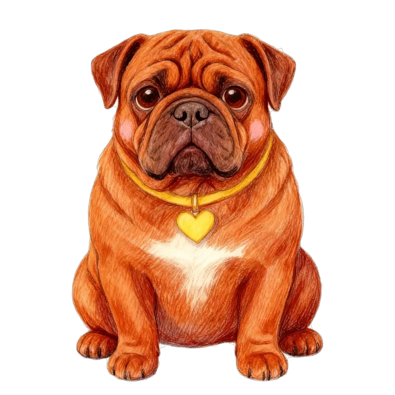
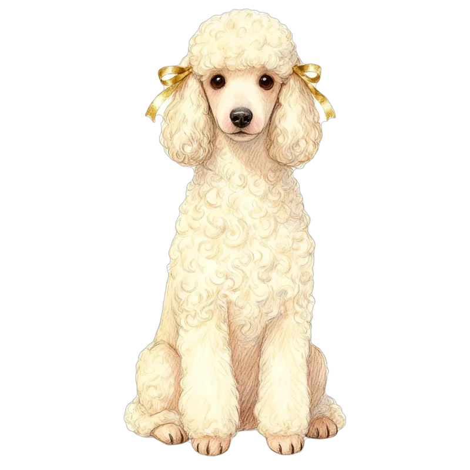

結果の画面のいちばん上だけを3案にしました。どの案も「○○気質の」で2段に分けるので、言葉の途中で切れません。右は名前と犬種が長いときの例です。
シェアするカードと同じ並び。犬種の色をうすく敷いて、結果だけ目立たせます。
自由人タイプ。パグらしさの中に、ボルドーらしい気質もあわせ持っています
元気いっぱいタイプ。
上を濃い色の帯にして、ひと目で「ここが結果」とわかる形。いちばん目立ちます。
自由人タイプ。パグらしさの中に、ボルドーらしい気質もあわせ持っています
元気いっぱいタイプ。
左に心に住んでいる犬種の絵。文字だけより、どんな結果かが絵で伝わります。

自由人タイプ。パグらしさの中に、ボルドーらしい気質もあわせ持っています

元気いっぱいタイプ。
どの案でも、長い犬種名は「・」のところでだけ折り返します。灰色の線は、その下に続く性格ブレンドなどの場所です。